Voltage
- Voltage is potential only. A circuit can have voltage and no current.
- Voltage-drop is directly related to current. More current flow makes difficult resistance easier to find.
- Voltage-drop testing is the most effective method.
- Master the voltmeter. Use all the information your meter gives you.
Voltage is the difference in charge between one spot and another — a comparison, not an absolute amount. When you measure voltage with your meter, you're comparing the amount of charge in one spot to another.
Voltage is sometimes called potential difference. Voltage is required to direct current, but it's possible to have voltage in a circuit with no current at all. The more relative difference in charge, the more potential there is for current to flow.
Voltage is the charge that enables current to flow across all the resistances in a circuit. Voltage is consumed over every resistance, proportional to the amount of resistance. In a complete circuit with current flowing, all the voltage is always consumed — and it's consumed very predictably.
Voltage drops through a series circuit, but current stays constant. This is the opposite of current, where the current leaving a point always equals the current that entered it.
No current flow. Measured across battery terminals, or by disconnecting a component and back-probing the connections. The voltmeter ends up in series with the circuit under test.
Voltage across the battery with current flowing. Should be lower than open circuit voltage with the engine not running. Source voltage that isn't lower than open circuit voltage means no current is flowing.
Voltage measured at different points along a circuit with current flowing — the voltage-drop of multiple components at once. Ground your meter to the battery or frame and probe down the circuit with the positive lead. Results that don't progressively drop indicate no current flow.
The difference in voltage across a single component — a section of wire, a connection, or a device. A reading of 0.000v indicates no current flow, but continuity through the component.
Always work with the most important Ohm's Law equation. Everything else staying the same: less voltage means less current, more voltage means more current.
Always start your diagnosis with Source Voltage. Fortunately, you're only looking for a few possible voltage levels as Source Voltage — is it charging voltage, or a fully charged battery voltage?
Current is directly proportional to voltage and indirectly proportional to resistance.
Voltage fulfills the source requirement for current flow. For us, sources are batteries and alternators. Batteries store voltage chemically; alternators produce voltage magnetically.
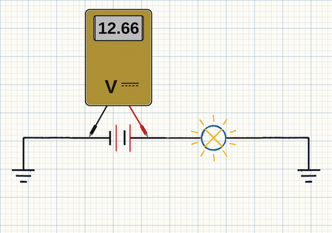
Voltage is potential. Voltmeters measure the difference in potential between two spots, and they're always connected in parallel with the circuit being tested.
When a measurement isn't what you expect, check your connections and meter, then test again.
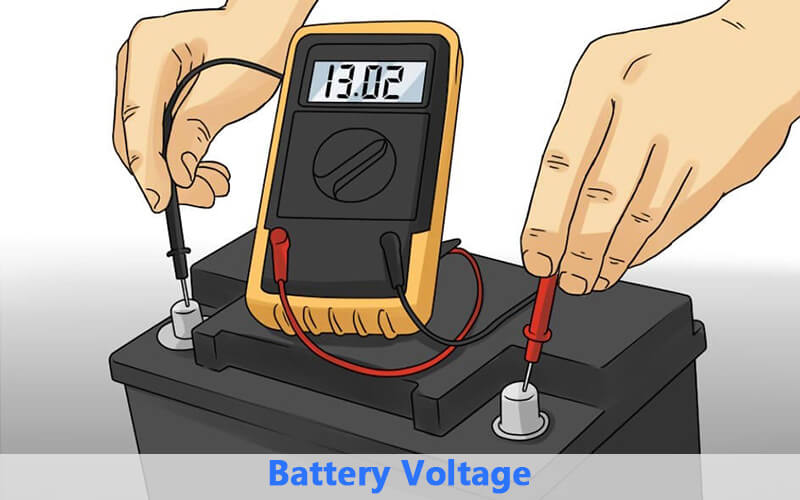
- Open circuit voltage testing means no current flow.
- Resistance has no effect on this test — a voltmeter won't show you any resistance here.
- It's possible for a circuit to have voltage but no current.
In a series circuit, all it takes is one component failing open to stop all current flow.
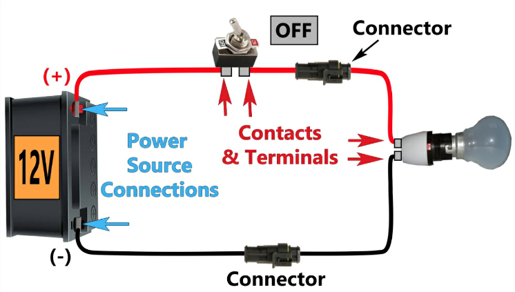
Kirchhoff's Voltage Law: the sum of all the volts is zero.
Voltage-drop testing is the best test of resistance. In an ideal world, all the voltage is consumed by the load, and every other point in the circuit reads 0v. These ideal measurements aren't realistic — but the rule holds: if there's no voltage-drop, there's no current flow, even across good components.
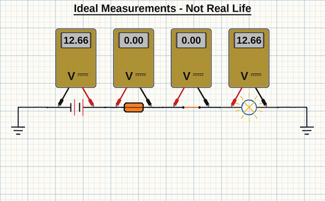
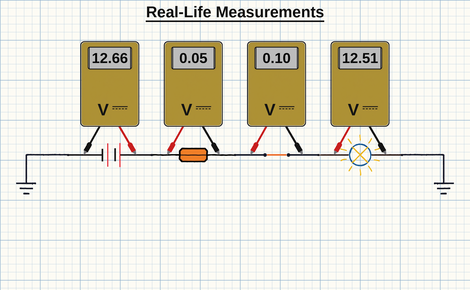
Everything has resistance. Voltage-drop is directly proportional to current — more current means more voltage-drop. What's a normal voltage-drop reading? It depends on the current in the circuit, the length of the circuit, and the material it's made from.
Your voltmeter is always connected parallel with the component or circuit you're testing.
- Voltage-drop test the battery terminals: one lead on the battery post, the other on the battery cable clamp.
- Operate a high-current load to make the resistance more apparent — HVAC, glow plugs, starter motor, or a combination of circuits.
- Voltage-drop should be near 0. Any voltage-drop indicates resistance in the connection.
Corrosion is a common cause of voltage-drop and can happen on the positive or negative side.
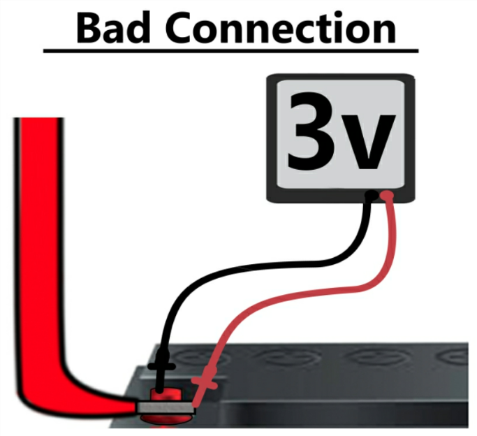
Leave your negative lead on the battery negative post. Test your way down a circuit with the positive lead — the circuit must be activated to measure available voltage. You can start at either end, or the middle, of a problem circuit. Even the ground side can be checked this way.
Available Voltage on the ground side should always be very low.
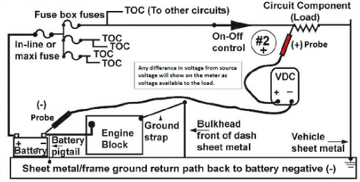
Now the meter's positive lead stays on the battery positive terminal, and you test your way down the problem circuit with the negative lead. The circuit must be activated for this test. This method does the math for you — the meter displays only the voltage-drop between the leads. It's essentially measuring voltage-drop of several components at once, so there must be current flow for this test to be effective.
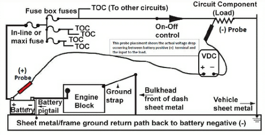
| Current in the Circuit | Acceptable Voltage Drop | Typical Voltage Drop of the Circuit |
|---|---|---|
| Low Current: 1–10 amps | Near 0% | 0.5 volts through the entire circuit is acceptable. |
| Medium Current: 10–30 amps | 5% | At 12.6v battery voltage, up to 0.6v. At 13.5v charging, up to 0.7v. |
| High Current: 30–100 amps | 8% | Example: charging circuit under full load, or start-aid circuits. At 13.5v charging, no more than a 1v drop in the complete circuit. |
| Very High Current: 100–250 amps | 12% | The battery cables to the starter. At 10v cranking voltage, no more than a 1.5v drop in the circuit. |
Measure battery voltage under load, then compare to the voltage-drop of the load. If the fan in an HVAC circuit draws 10 amps, a 1-volt drop across a single connection in that circuit is excessive.
Wiggle-test while measuring voltage-drop. Wires and connections often show up as intermittent failures.
1. Good Circuit
In a complete circuit with current flowing, points along the circuit will show small amounts of voltage-drop. This is normal — reference the normal amount of voltage-drop for the amount of current in the circuit.
Voltage in a good series circuit drops, or falls, across every load or resistance.
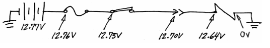
2. High Resistance
With a complete circuit and current flowing, if there's significantly less voltage at some point, that's the classic high-resistance symptom. All the voltage should drop over the load, not somewhere else in the circuit. This voltage drop in the wrong place is most often caused by resistance from poor contacts or corrosion.
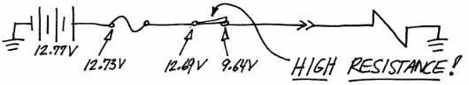
3. Open Circuit
You need to recognize the lack of voltage-drop. When Available Voltage tests in the circuit come back at exactly source voltage, the circuit is open — there is no current flow. A switch is open, a connector is unplugged, or a wire is broken. This test will not find any unwanted resistance in the circuit.
It's possible for a circuit to have voltage but no current. In a series circuit, all it takes is one component failing open to stop current flow — Available Voltage test results that are exactly the same all the way down the circuit indicate no current flow.
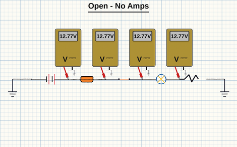
4. Ghost Voltage
Very similar to an open circuit, but this means there's no continuity between the meter leads. Ghost Voltage is a varying, small voltage reading — wrapping a lead around your wrist, or wiggling the meter leads, affects the reading. This is an open circuit. Check your meter lead connections, then check the circuit for open-circuit failures.
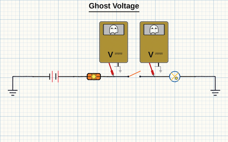
5. Continuity
Meter reads a steady zero. Shaking the meter leads doesn't affect the reading — that confirms good connection to the circuit, with good continuity between the meter leads and no current flow. And it really means 0.00v: even the smallest amount of voltage measured means there is current flow.
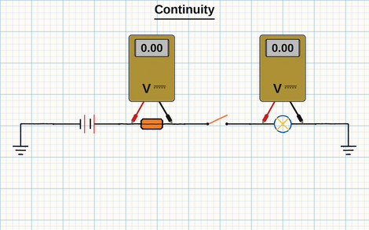